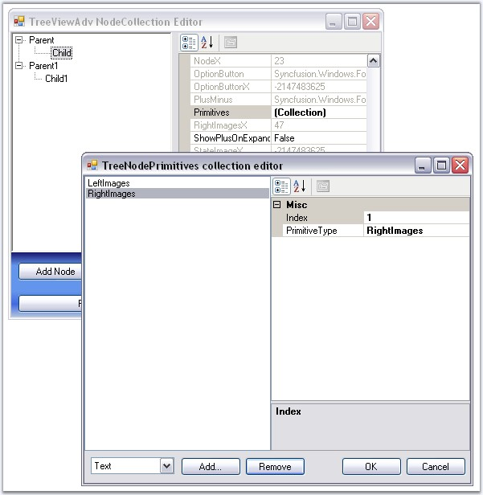

The TreeViewAdv control supports a set of primitive collections, that can be set through the Primitives Collection Editor available with each node in the TreeViewAdv controls.

Figure 1120: TreeNodePrimitives Collection Editor
The types of primitives available are LabelPrimitive, LeftImagePrimitive, RightImagePrimitive, CheckBoxPrimitive, OptionButtonPrimitive and CustomControlPrimitive.
The Primitive Collection Editor available for each node provides index property. Using this index set, for each primitive, the position for each of these node contents can be set.
· LabelPrimitive - LabelPrimitive is used to display the text of the label.
· LeftImagePrimitive - LeftImagePrimitive is used to display the image to the left of the nodes.
· RightImagePrimitive - RightImagePrimitive is used to display the image that is added to the right of the nodes.
· StateImagePrimitive - StateImagePrimitive is used to display the state image of the node depending on its state, whether expanded or collapsed.
· CheckBoxPrimitive - CheckBoxPrimitive is used to display the checkbox for the nodes. When user clicks on this, the node will be checked.
· OptionButtonPrimitive - OptionButtonPrimitive is used to display the Option button available for the nodes. When the user clicks this primitive, the corresponding node will be selected.
· CustomControlPrimitives - CustomControlPrimitive displays the custom control for the nodes. User can use the functionality of the custom control primitive which is added to the nodes.
See also
Node Images, Checkbox and Option Buttons, CustomControls